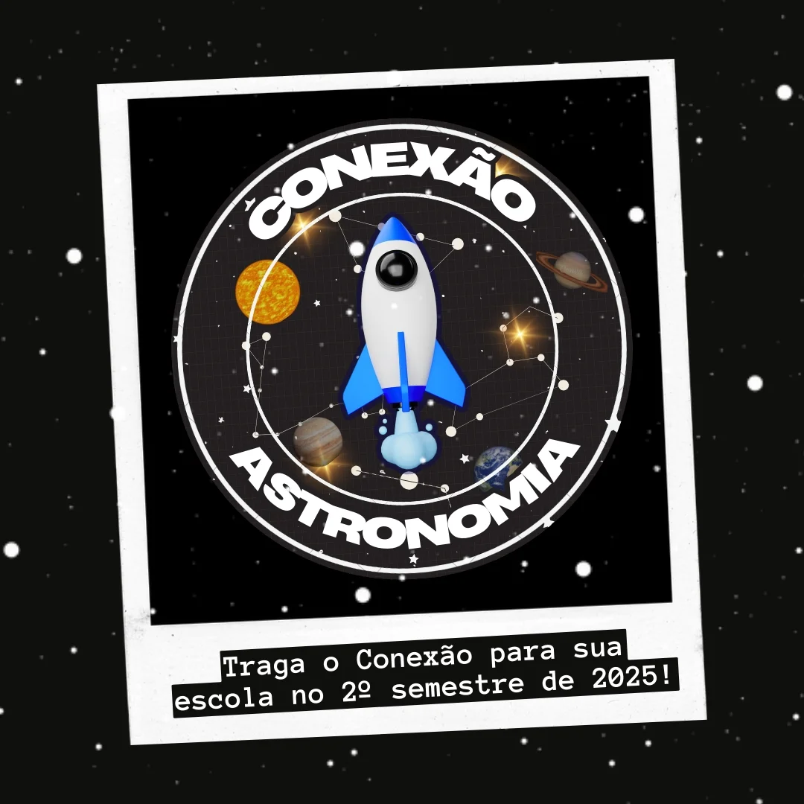
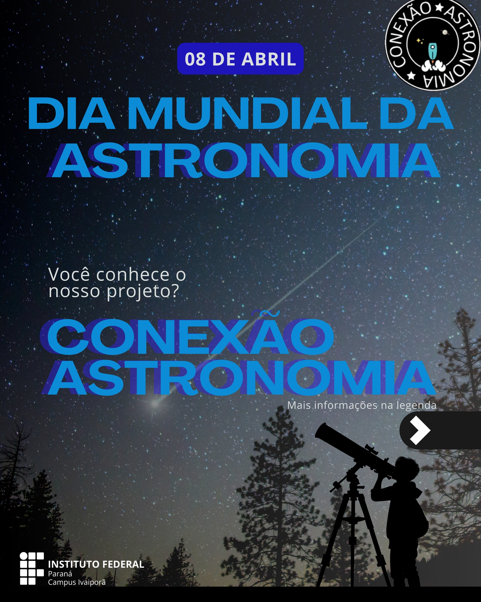

Sobre o Projeto
A BNCC trouxe a relação entre Ciência e Universo para o centro da educação básica, mas só a norma
não garante que esse conhecimento chegue às salas de aula. É aí que entramos: nosso projeto
busca aproximar esse conteúdo da realidade dos professores e alunos.
✨ Atuamos em duas frentes:
Materiais digitais de Astronomia e Astrofísica nas redes sociais, para popularizar a ciência e
torná-la acessível.
Cursos de formação continuada (online e presenciais) para professores, com estratégias criativas
e práticas alinhadas à BNCC e ao currículo do Paraná.
🚀 Assim, a Astronomia se torna um instrumento de interdisciplinaridade, fortalecendo o
aprendizado e superando barreiras conceituais ou burocráticas. Mais do que olhar para as
estrelas, é sobre transformar a forma de aprender e ensinar. 🌌💚.
Últimas Notícias

18 de Setembro de 2025
Título da Notícia ou Evento Importante
Um breve resumo da atualização, como a participação em um evento, o início de uma
nova fase de pesquisa ou a abertura de inscrições para voluntários...
Leia mais

12 de Setembro de 2025
Resultados da Primeira Etapa Publicados
Concluímos a primeira fase do projeto com sucesso! Agradecemos a todos os envolvidos.
Confira nosso relatório preliminar e os próximos passos...
Leia mais